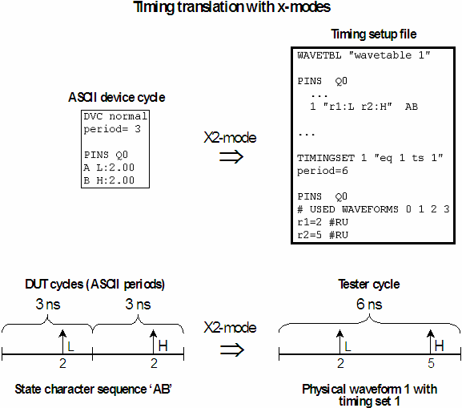

Using X-Modes: the xfact Column
The term x-mode refers to the ability to execute more than one DUT cycle (as defined by the period keyword of an ASCII device cycle) in one test system cycle (as defined in a timing set). The basic idea is to combine the actions of a state character sequence into one waveform, and to expand the length of the test system cycle accordingly.
The following figure illustrates the principle for state character sequences with a length of 2:

In this figure, the principle is exemplified by the state character sequence AB. Since two state characters are defined for Q0 in ASCII device cycle normal, there are 4 possible sequences of length 2. A separate waveform will be created for each of these. For the sequences AA and BB, the respective actions will be executed twice in the waveform.
The xfact column of the global configuration file specifies the x-mode factor, which defines
- the number of DUT cycles to be executed in one test system cycle (the number of state character definitions to be combined), and
- the length of the test system cycle (which is the DUT cycle length multiplied by the x-mode factor).